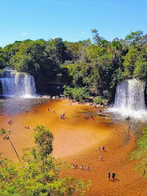

Lençóis Maranhenses
A areia branca e fina marca o caminho percorrido pelos viajantes em meio ao Parque Nacional dos Lençóis Maranhenses. As lagoas de água doce entre as dunas formam um cenário único e encantador.
Google Maps
Restaurantes da região
- Restaurante A Canoa
- Mangue Restaurante
- Restaurante da Carminha

Cachoeiras de Carolina
Carolina é conhecida pelas belas cachoeiras e paisagens naturais. É um lugar perfeito para quem quer relaxar, aproveitar a água cristalina e viver uma experiência cercada pela natureza.
Google Maps
Restaurantes da região
- Casarão Distrito 7 (gastrobar)
- Tio Pepe Pizzaria, Churrascaria Estrela do Sul
- Cachoeiras do Itapecuru

Chapada das Mesas
A Chapada das Mesas oferece mirantes impressionantes, formações rochosas e muito contato com a natureza. O visual é ideal para quem gosta de aventura e belas paisagens.
Google Maps
Restaurantes da região
- Tribo do Crepe
- Tio Pepe Pizzaria
- Espaço Gourmet

Palácio dos Leões
O Palácio dos Leões é um dos principais pontos históricos de São Luís. Além da arquitetura marcante, o local oferece uma vista bonita e muito valor cultural.
Google Maps
Restaurantes da região
- Kazumi - Culinária Japonesa
- Benja's - Surf'n'turf
- El Patron Hamburgueria

Teatro Arthur Azevedo
O Teatro Arthur Azevedo é um símbolo cultural e histórico. Visitar esse espaço é uma boa oportunidade para conhecer a arte, a história e a beleza da cidade.
Google Maps
Restaurantes da região
- SENAC Restaurante
- Cafofinho da Tia Dica
- Caçarola Bistrô